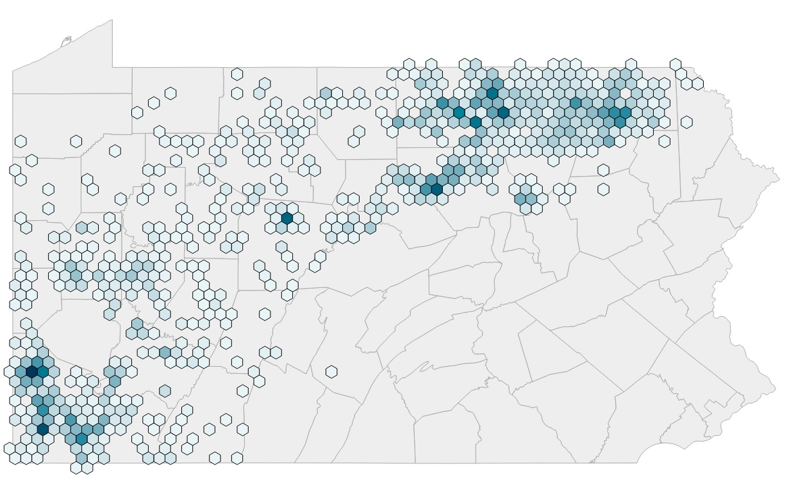
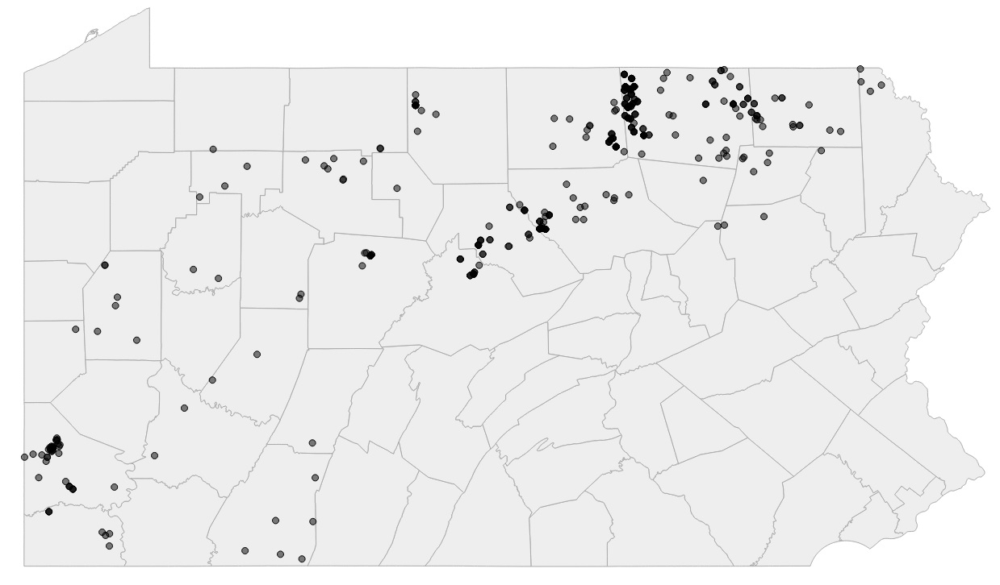
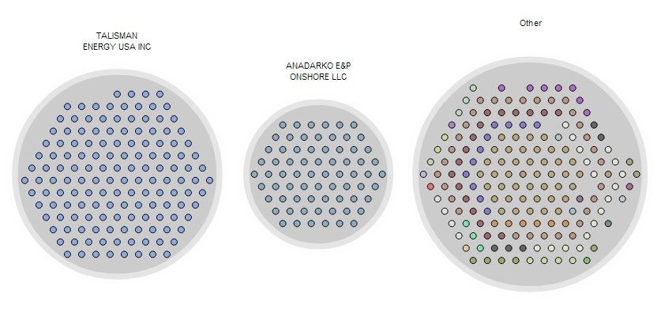
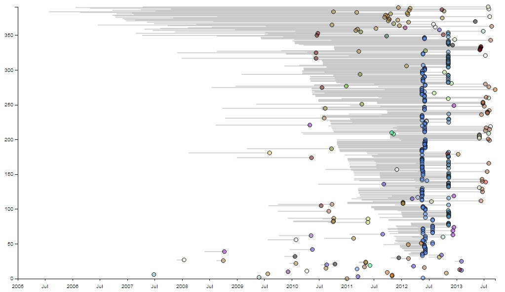
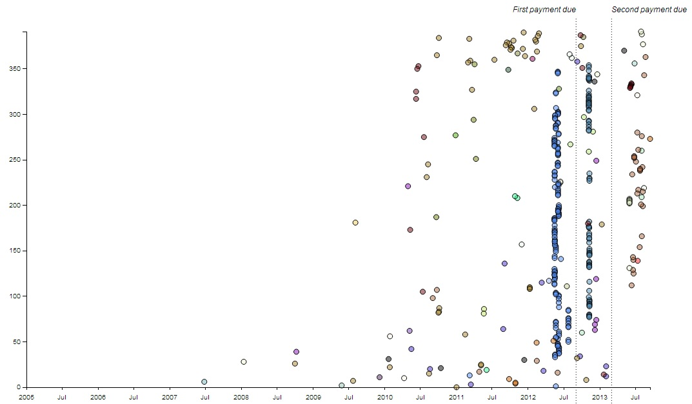
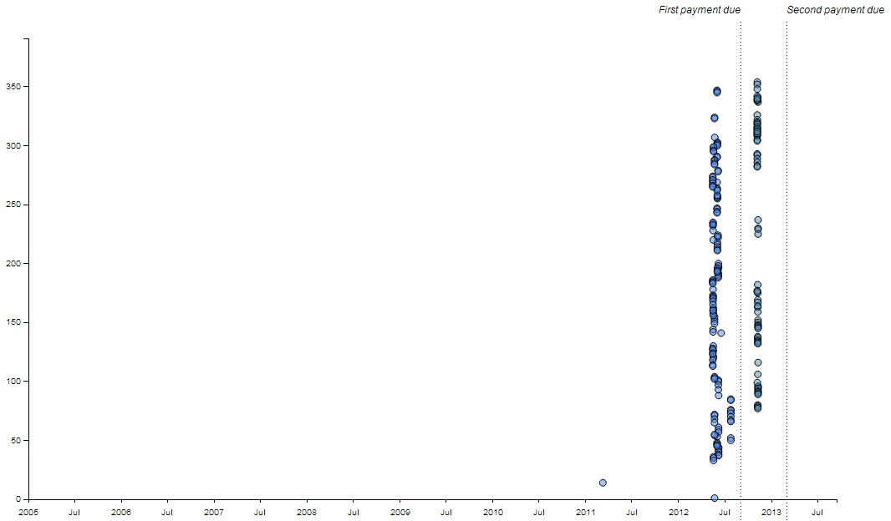
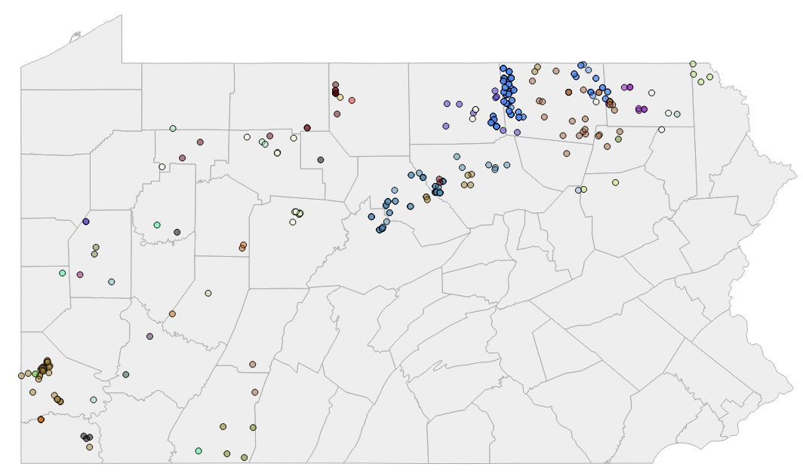

Amid Pennsylvania's shale boom, energy companies have plugged more than 400 gas wells.
Why?

Amid Pennsylvania's shale boom, energy companies have plugged more than 400 gas wells.
Why?
Since 2006, Pennsylvania gas drillers have broken ground on more than 7,000 wells. Many became fully functioning gas wells.
1 well 50 100
Around 400 met an early death. These wells were plugged, filled with concrete after having been partially or completely drilled by energy companies.
Talisman Energy and Anadarko have abandoned the most wells, followed by Range Resources.
Many of the doomed wells were spudded between 2010 and 2012, as natural gas prices took a deep dive. The majority weren't fully drilled or completed.
In February 2012, Pennsylvania passed Act 13, which imposed fees on all active wells — even those that weren't producing. As these new expenses cut into declining sales revenue, some energy companies decided to cut their losses and plug. 
Both Talisman and Anadarko have aggressively shut down wells in advance of Act 13 deadlines, saving a hefty balance in fees.
Plugged wells are permanent. Once abandoned, companies won't be returning to redrill them, leaving potential revenue for landowners, local businesses and municipalities buried under ground.
Central Pennsylvania counties, which are on the periphery of the Marcellus, saw a disproportionate number of their wells abandoned.
